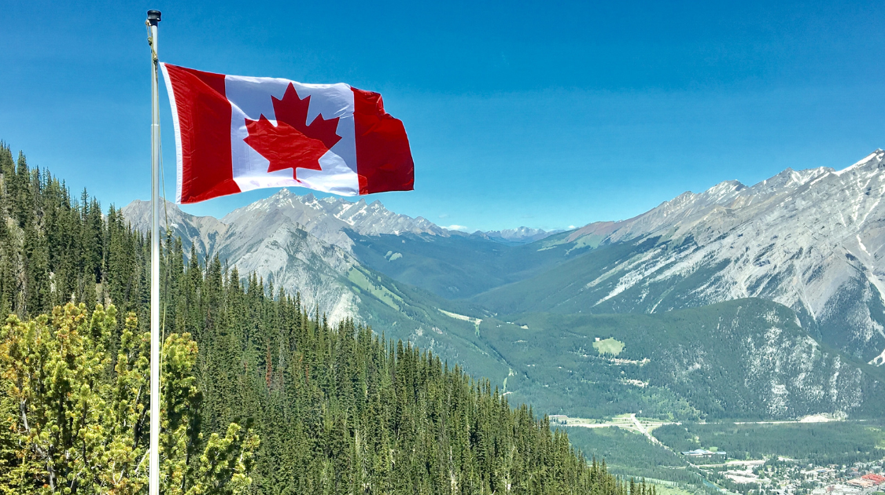

World
Will Canada Ever Win a Seat on the UN Security Council?
By Sean Oh | Published Jul 21, 2020 7:05 p.m. PST

On June 17th, 2020, Canada lost its bid for a seat at the United Nations Security Council to Norway and Ireland. The loss was an unfortunate defeat for Justin Trudeau, who has previously pledged for Canada to take on a bigger role in the international community and has expressed a desire for Canada to exert greater influence globally. This is not Canada’s first attempt at gaining a seat on the Security Council; Canada had also attempted a bid in 2010 under a conservative government run by former Prime Minister Stephen Harper. So what exactly went wrong again?
International Contribution
The Security Council's primary role in the global stage is to ensure that devastating conflicts do not arise and that peace and security is maintained internationally. The Security Council accomplishes its role through a variety of ways such as peacekeeping missions, appointing special envoys, or establishing amiable diplomatic relationships among states.
With Canada's bold announcement of its candidacy for one of two rotating seats on the Security Council as well as a massive campaign to earn the approval of multiple member states, it became apparent that the international community did not view Canada in the most positive light. Considering the United Nations Security Council’s purpose globally, Canada's candidacy is comparatively weaker than European rivals when Canada has increasingly contributed less to the peacekeeping missions of the United Nations and has significantly decreased the aid it provides to developing countries.
Canada's lackluster performance on the international stage to provide relief and support to countries struggling with conflict is largely to blame for Canada being unable to secure the 128 votes necessary to earn a seat on the Security Council. Compared to Norway and Ireland who received 130 votes and 128 votes, respectively, Canada received 108 votes which was comparatively worse than the 114 votes Canada received in 2010 under Former Prime Minister Stephen Harper.
Multilateral Commitments
However, Canada still has important traits that make it a promising candidate and potential member state. Canada could have provided unique benefits to the Security Council if it had been accepted. It is important to note that Canada has both a greater population and larger economy than both Norway and Ireland combined.
Historically, Canada has shown immense strength and leadership on the international stage which hints to what Canada is capable of achieving in the future as a member state of the Security Council. This looks like Canada initiating the very first United Nations peacekeeping mission to resolve the Suez Crisis under the leadership of Lester Pearson, a Canadian Prime Minister who won the Nobel Peace Prize in 1957. Canada is even one of the founders of the G20 Group, which includes countries across the globe with a strong and growing economy. Canada has shown tremendous leadership in hosting an international conference that led to the creation of the Montreal Protocol, an international agreement that aimed to protect the ozone layer.
Canada has previously shown its capacity to lead the international community and the positive influence it can have on the global community. It is crucial for Canada's future that other states are reminded of the prominent roles Canada has undertaken in the past and that Canada continues to make an effort to show similar or growing levels of leadership and contribution to the global community.
Students' Perspectives
In a society that is becoming increasingly global in nature, it is important for students to learn about international relations as well as Canada's bid for a seat on the Security Council which demonstrates what countries currently value the most and, specifically, what the Security Council values in its member states. A state’s economy and population is considerably less important than one's willingness to contribute to peacekeeping missions. Canada provides a wonderful example to students of how one must continuously show improvement and how public interaction between different people can be critical in being able to access a variety of rare and valuable opportunities.